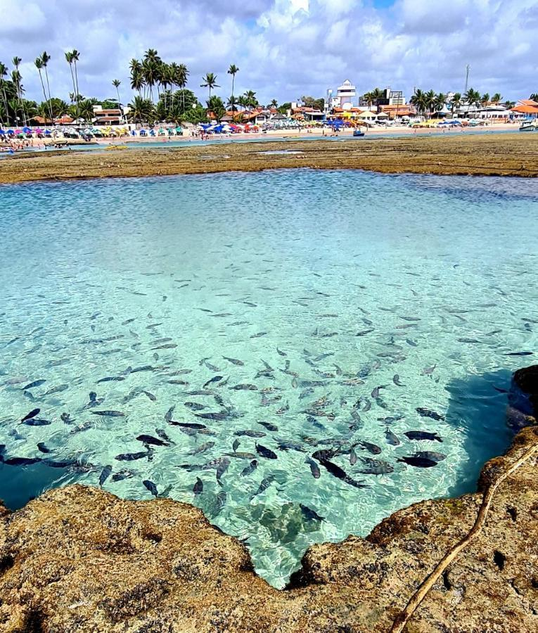
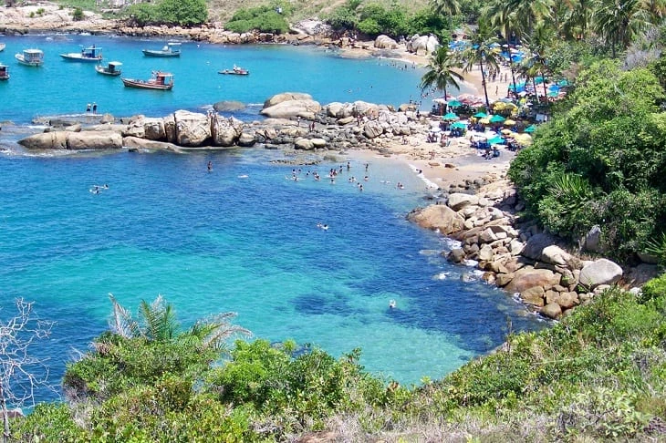
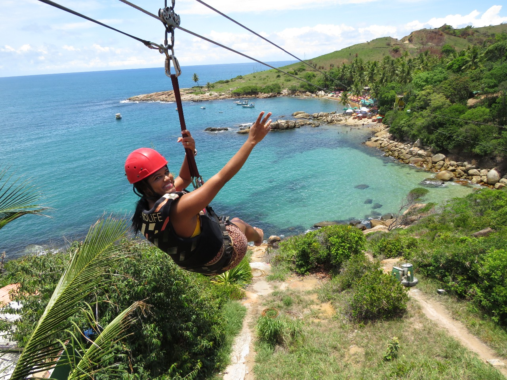
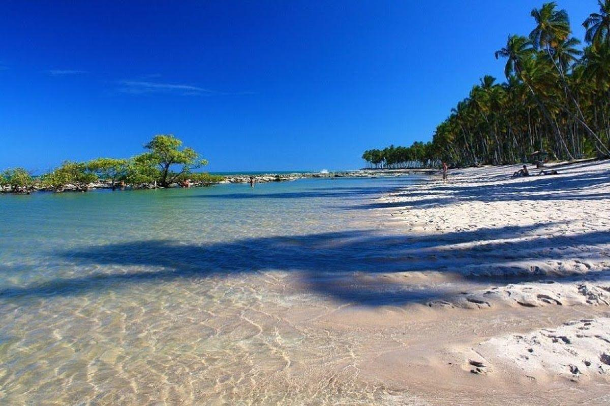

O Litoral de Pernambuco é conhecido por suas praias paradisíacas, águas mornas e cenários deslumbrantes. Desde o norte, com as praias de Itamaracá e Maria Farinha, até o sul, que abriga verdadeiras joias naturais, como Porto de Galinhas, o estado é um convite ao turismo e à contemplação. Porto de Galinhas, localizada no município de Ipojuca, é o principal destaque. Eleita várias vezes como a melhor praia do Brasil, encanta visitantes com suas piscinas naturais formadas por recifes de coral, ideais para mergulho e observação da vida marinha. Durante a maré baixa, é possível fazer passeios de jangada e admirar a riqueza da biodiversidade local.     A praia oferece uma infraestrutura completa, com bares, restaurantes e hotéis que atendem a todos os perfis de viajantes. Além das águas cristalinas e areias brancas, Porto de Galinhas tem atrativos como o Pontal de Maracaípe, um lugar perfeito para relaxar e apreciar o encontro do rio com o mar. Seu charme único, aliado à hospitalidade pernambucana, faz de Porto de Galinhas o destino ideal para quem busca uma experiência inesquecível no litoral do Brasil.
Voltar ao início